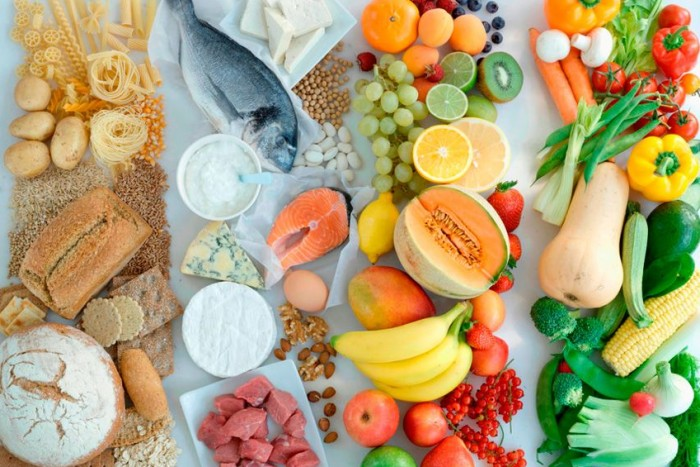

Напомним основные правила системы раздельного питания. Знакомясь с ними надо, однако, учитывать, что они – не догма. Как отмечает доктов Вальба, «индивидуальное в раздельном питании стоит выше общего. Директивы относятся только к здоровым людям. А тот, кто болен, например, диабетом или хронической недостаточностью почек, должен вносить в систему раздельного питания индивидуальные изменения в соответствии со своими потребностями».
Вот эти правила:
– в пищу следует употреблять по возможности только натуральные продукты и избегать продукты, обработанные промышленным способом, с определенным сроком хранения, а также готовые блюда;
– принимая пищу, не следует комбинировать вместе продукты, богатые белком, и продукты, богатые углеводами;
– все нейтральные пищевые продукты можно сочетать либо с продуктами белковой группы, либо с продуктами углеводной группы;
– во избежание перекисления организма следует ограничивать потребление продуктов, изобилующих белками и углеводами;
– для сохранения кислотно-щелочного баланса пища должна состоять приблизительно на 75 процентов из преимущественно сырых щелоче-образователей (овощей, зеленого салата и фруктов) и только приблизительно на 25 процентов из кислото-образователей (мяса и рыбы);
– по утрам следует есть по возможности щелочную пищу, в обеденное время – белковую, а вечерами – углеводную. После 15 часов не следует принимать никакой белковой пищи;
– между основными приемами пищи (завтраком, обедом и ужином) рекомендуется выдерживать интервалы порядка 4х часов. В эти интервалы можно и поесть, если это обусловлено дневным ритмом, ведь в раздельном питании индивидуальное стоит над общим;
– есть следует медленно и спокойно, тщательно пережевывая пищу.
Выбор правильного питания – это большой шаг к предотвращению многих заболеваний, убивающих нас раньше отпущенного нам природой срока.
Вот 101 продукт, имеющий «правильный состав» – состав, который поможет вам прожить долгую и продуктивную жизнь, избавленную от болезней.
1. Спаржа. Для борьбы против рака и гипертонии чашка этих величавых копий содержит хорошую порцию каротина и калия. В спарже много клетчатки, зато нет жира, холестерина. Она помогает предотвратить сердечнососудистые заболевания, ожирение, диабет. Всего 44 калории содержит чашка спаржи.
2. Бананы. Пара небольших бананов содержит столько же клетчатки, сколько целый ломоть белого хлеба, и вдобавок изрядную дозу калия, понижающего кровяное давление. Бананы входят в каждую диету с невысоким содержание жиров, предназначенную для профилактики рака, сердечнососудистых заболеваний, диабета и ожирения. Питательная ценность одного банана около 100 калорий.
3. Яблоки. Яблоки – один из лучших источников пектина, растворимого волокна. Поддерживать низкий уровень холестерина позволяет именно пектин, предотвращающий сердечнососудистые заболевания. Он также позволяет избегать резких колебаний содержания сахара в крови и таким образом держать его под контролем. В борьбе против излишнего веса яблочный пектин замедляет пищеварение и помогает вам быстрее почувствовать себя сытым, что делает его вашим союзником. В среднем одно яблоко содержит 81 калорию. Несомненно, этот фрукт выглядит как блистательный символ хорошего здоровья.
4. Авокадо. Вполне вероятно, что авокадо – наиболее мощный источник калия, который только можно найти. В борьбе против гипертонии он незаменим. К сожалению, его высокая калорийность (324 калории в одном фрукте) может сыграть против вас, поэтому не злоупотребляйте им. Из-за высокого содержания жиров авокадо часто пользуется дурной репутацией. Большая же часть этих жиров, в действительности, ненасыщенные. В первую очередь они весьма полезны для здоровья, благодаря их способности понижать уровень холестерина.
5. Абрикосы. Абрикосы – богатый источник каротина и клетчатки, вместе противодействующих раку. Он также содержит много калия, который защищает от инсульта и гипертонии. Кто следит за собственным весом, может немного подсластить жизнь горстью сушеных абрикосов – примерно десять половинок – содержащих всего 83 калории.
6. Бобы. Едва ли можно найти сорт бобов, который не был бы вам полезен. Бобы – и розовые, и белые, и коричневые, и красные – содержат столько растворимых волокон, что диета с ежедневной порцией в 4 унции (113 г) бобов способна значительно понизить высокий уровень холестерина. Бобы содержат много калия, кроме того кальция и протеина и очень мало жиров, и поэтому должны заменить на вашем столе жирное мясо.
7. Артишоки. Один средний артишок содержит больше клетчатки, чем миска овсянки, и втрое больше, чем овсяная булка. Это делает артишок ценным союзником в борьбе против рака, диабета и сердечнососудистых заболеваний. В нем обилие кальция и немалое количество калия и магния.
8. Неочищенный рис. Представьте себе, что каждое зернышко неочищенного риса – это снаряд, которым вы отстреливаетесь от диабета, сердечнососудистых заболеваний и рака. Но не порох, а клетчатка взрывчатое вещество в этих снарядах. В белом очищенном рисе вы не найдете ее, а также многих других компонентов. Поэтому берите именно бурый, неочищенный рис.
9. Свекла. Когда ваши салаты станут надоедать вам, нарежьте полчашки этой пурпурной прелести и украсьте ею вашу зелень. Вы не только выиграете в цвете и вкусе, но и добавите заряд калия и клетчатки к своей программе профилактики инсульта. Энергетическая ценность свеклы не стоит даже упоминания, поэтому вы можете наесться ею, не опасаясь, что нарушите диету.
10. Ячмень. Ячмен бывает двух видов: перловая крупа, у которой удалена вся наружная шелуха, и полуочищенный ячмень, называемый также шотландским, у которого удалена только самая внешняя оболочка. В ячмене много протеина и клетчатки, мало жиров и натрия; чашка вареной крупы содержит 170 калорий. Ячмень вполне может заменить мясо в супах и вторых блюдах.
11. Брюссельская капуста. Хороший заряд витаминов А и С дадут вам эти маленькие драгоценности с вашего огорода. В них умеренное количество калия и клетчатки и мало натрия, мало жира. Это полезный продукт для тех, кому надо контролировать свой вес; чашка брюссельской капусты содержит 55 калорий.
12. Ежевика. Эта сладкая радость содержит около 74 калорий на чашку, изрядную дозу калия, клетчатки, почти не содержит соли, а содержание жиров в ней чисто символическое. Она поможет вам противостоять гипертонии и ожирению.
13. Капуста. Капуста – это овощ, который будет вам всегда полезен, независимо от состояния вашего здоровья. Чашка мелко нарезанной капусты содержит достаточное количество кальция, калия и витаминов А и С. В ней практически нет натрия и жиров, всего 16 калорий, и при этом обилие клетчатки. Те, кто не ест капусту, как показывают исследования, подвержены раку толстой кишки втрое чаще, чем те, на чьем столе она бывает хотя бы раз в неделю. Эти же достоинства делают капусту полезной против диабета, ожирения, гипертонии, инсульта.
14. Брокколи. Брокколи – лучший из всех овощей для профилактики раковых заболеваний. Чашка брокколи – это чашка витамина С, кальция и калия. Вместе эти компоненты делают брокколи хорошей защитой еще против целого ряда заболеваний: сердечнососудистых заболеваний, остеопароза. Сдерживать ожирение позволяет 24 калории в чашке брокколи. Перечисленные достоинства делают брокколи едва ли не самой полезной пищей.
15. Гречка. Гречка, пахнущая орехами, содержит много клетчатки, мало жиров и натрия, как все хорошие крупы. Эти качества делают ее хорошей защитой от сердечнососудистых заболеваний. Но гречиха имеет еще одно достоинство, которого нет у других круп. Гречневая диета, как показал исследования, оказывает положительное влияние на уровень сахара в крови, что может быть полезным для диабетиков. Можно использовать гречневую муку вместо обычной для своей кулинарии и выпечки. Можно приготовить салат из вареной гречки и мелко нарезанного шпината. Из гречневой муки получаются великолепные оладьи.
16. Дробленая пшеница. Высушенная и раздробленная пшеница, ошпаренная кипятком, чаще используется для украшения салатов. А на Ближнем Востоке ее используют как основной компонент в некоторых блюдах. Предотвратить инсульт и понизить кровяное давление поможет одна чашка дробленой твердой озимой пшеницы, к тому же вы получите хорошую дозу калия.
17. Цветная капуста. В цветной капусте мало жиров мало натрия, зато калия и клетчатки более чем достаточно для того, чтобы обратить на себя внимание людей, нуждающихся в контроле за кровяным давлением и профилактике инсульта. Не следует забывать о ней и всем остальным: она обладает мощным антиканцерогенным потенциалом. Как показывают исследования, цветная капуста принадлежит к семейству красноцветных растений, которые содержат вещества, предотвращающие рак.
18. Рапсовое масло. Это масло снижает уровень холестерина столь эффективно, что оказывается полезным для профилактики сердечнососудистых заболеваний. Масло содержит много ненасыщенных жиров. Однако – внимание! – оно высококалорийно: 120 калорий в столовой ложке, поэтому использовать его надо не вместе с другими жирами, а вместо них.
19. Сельдерей. В любую диету входят эти хрустящие зеленые стебли. Стебель сельдерея предотвращает рак, содержит всего 6 калорий, при этом в нем много каротина и калия, необходимого для контроля за кровяным давлением. В нем также содержится умеренное количество кальция, укрепляющего кости. Чего в сельдерее нет, так это жиров. Кто бы мог подумать, что такой второстепенный продукт обладает таким набором первоклассных качеств.
20. Канталупа (ребристая дыня). Эта абрикосового цвета, солнечная дыня имеет такой состав, что всего лишь половина ее обеспечивает вас достаточной дозой витаминов А и С, защищающих от рака. Она содержит мало жиров и соли и необычайно богата калием, поэтому рекомендуется для тех, кому необходимо снижать высокое кровяное давление. Ожирения можно не опасаться, поскольку половинка дыни содержит 94 калории.
21. Сыр. Король всех блюд – сыр. Он полон питательных веществ: кальция, укрепляющего кости, витамина В, защищающего от стресса, витамина А, необходимого для профилактики рака. В основном в нем много насыщенных жиров. Поэтому предпочтительные сорта с низким содержание соли и жиров. Злоупотреблять сыром не стоит – порции в 1 унцию (28 г) более чем достаточно. Он содержит тем меньше жиров, чем светлее и мягче сыр. Наилучший выбор – крестьянский сухой кисломолочный сыр.
22. Морковь. Морковь – чемпион среди всех защитников вашего здоровья. Она предотвращает раковые заболевания. Морковь самый доступный осточник каротина. Для курильщиков, если они не едят моркови, вероятность заболевания раком легких увеличивается в три раза. Морковь достаточно богата калием и клетчаткой. Она содержит изрядное количество растворимого волокна, что немаловажно для контроля за диабетом. Это идеальная закуска для желающих похудеть и всего 31 калория.
23. Вишни. Вишни практически не содержат сахара и жиров, это воистину подарок природы любителям сладкого. Но не стоит забывать о них в вашей борьбе против рака, так как каротина в них не меньше, чем во многих овощах. Вишни полезны для профилактики инсульта и гипертонии, так как в них также много калия.
24. Дыни Касаба. Богатый источник калия витамина С – это один-единственный ломтик дыни Касаба. Надежный заслон инсульту ставит сочетание этих элементов, а также снижает кровяное давление. Чашка нарезанных кусочков содержит 43 калории. Касаба является мощным оружием в борьбе против ожирения.
25. Кукуруза. В половине чашки кукурузы всего лишь 66 калорий и много каротина, клетчатки. Предназначенная для профилактики рака, сердечнососудистых заболеваний, диабета и ожирения она играет важную роль в любой диете.
26. Каштаны. Не только для поджаривания над огнем в рождественскую ночь существуют каштаны. Как только осенью они начнут осыпаться с деревьев, сразу включите их в свой рацион. Чашка спелых очищенных каштанов содержит 846 миллиграммов камня – больше любых других продуктов. Это поможет вам избежать гипертонии и инсульта. Если вы следите за своим весом, будьте осторожны: чашка каштанов обойдется вам в 310 калорий.
27. Черный горошек. Для тех, кто ищет здоровую пищу, эти маленькие черные выходцы с Юга – настоящий подарок. В них много витамина В, предохраняющего от стресса, и железа, которое входит в состав крови. Они полезны против инсульта и гипертонии, а также богаты калием и клетчаткой и бедны жирами и натрием.
28. Грудки цыплят. Идеальное сочетание для тех, кто желает избежать гипертонии, инсульта и ожирения – это цыплячьи грудки, содержащие мало калорий, мало жиров и мало натрия. 142 калории содержит половинка жареной цыплячьей грудки без кожицы.
29. Одуванчики. Ботва одуванчиков, не обремененная натрием и жирами, является источником калия и кальция. Всего 35 калорий в чашке сырых листьев, зато две дневные нормы каротина. В вашей войне против рака это полезный союзник.
30. Куриный горошек. Часто используется как заменитель мяса, потому что содержит достаточное количество кальция, клетчатки и очень много калия, а также много протеина. Для профилактики гипертонии, инсульта – это одно из лучших блюд. Куриный горошек, как показывают исследования, может быть полезен для профилактики сердечных заболеваний. 134 калории содержит полчашки куриного горошка.
31. Баклажаны. Этот пурпурный овощ предотвращает гипертонию и инсульт благодаря высокому содержанию калия. Всего 27 калорий содержит чашка баклажанов, он неизменно входит в меню желающих похудеть.
32. Листовая капуста. Овощ, превосходный во многих отношениях, – это листовая, или кормовая капуста. Чашка вареной капусты – это почти дневная норма каротина, необходимого для профилактики рака. Богатый источник кальция, предотвращающего остеопороз, а также калия, предохраняющего от инсульта и гипертонии. В ней очень мало жиров. Это друг тех, кто живет здоровой и свободной от обжорства жизнью. Всего 27 калорий на чашку (в вареном виде).
33. Инжир. Богатый источник полезной клетчатки с низким содержанием жиров – это инжир, благодаря чему, как считают специалисты, он позволяет вам чувствовать себя сытым в течение длительного времени. Он может помочь тем, кто хочет похудеть. Всего 42 калории в трех вареных ягодах инжира; они содержат столько же клетчатки, сколько целая миска овсяных хлопьев.
34. Болотная капуста. Чашка этих маленьких овощей содержит всего 21 калорию и дневную дозу каротина, предохраняющего от рака.
35. Камбала. Камбала обладает теми же лечебными свойствами, что и палтус, принадлежащий к тому же семейству. В ней почти нет насыщенных жиров, много протеина, изрядное количество витаминов В и низкая калорийность – всего 120 калорий в 3 унциях (85 г).
36. Бифштексы. Вам это кажется странным? Если вы можете ограничивать свой аппетит, вовсе не стоит исключать мясо из своего рациона. Следует не есть слишком много и выбирать только наименее жирные куски.
Хорошо приготовленный бифштекс – богатый источник калия, предотвращающего инсульт, и железа, входящего в состав крови. Один бифштекс весом в 8 унций (227 г) содержит 276 калорий.
37. Медовая дыня. Дыня – бледного лимонного цвета, столь богатая калием – заслуживает внимания каждого, кто заботится о профилактике инсульта и гипертонии. В ломтике дыни 46 калорий – полезно для тех, кто желает похудеть.
38. Палтус. Мясо этой рыбы рыхлое, белое и содержит ничтожное количество насыщенных жиров, мало натрия всего лишь 100 калорий в одной порции весом 3 унции (85 г). Оно занимает одно из первых мест в списке богатых протеином, полезных для сердца низкокалорийных продуктов. В ней кроме того, достаточно витамина В, защищающего от стресса.
39. Кудрявая капуста. Всего 43 калории содержит чашка вареной кудрявой капусты и много кальция, калия, каротина. Против ожирения – это мощное средство.
40. Чеснок. Чеснок остер на вкус; не менее остра его способность усиливать процесс разрушения кровяных сгустков, вызывающих инсульт, и способность искоренять холестерин, несущий с собой сердечнососудистые заболевания. 4 калории содержит головка чеснока. Самая дешевая страховка от любых недомоганий – это чеснок на вашем столе.
41. Кольраби. В буквальном переводе с немецкого «кольраби» означает «капусто-турнепс». Действительно, это тоже овощ из семейства крестоцветных, обладающих антиканцерогенными свойствами. Также в нем много калия и витамина С. Энергетическая ценность одной чашки кольраби 48 калорий, жиров в нем почти нет, натрия мало. В борьбе с инсультом, ожирением и гипертонией это в общем неплохой помощник.
42. Грейпфруты. Один из самых популярных диетических продуктов – грейпфрут, уступающий только сельдерею. Половинка грейпфрута содержит всего 38 калорий. Благодаря обилию клетчатки, создающей ощущение сытости, и низкой калорийности он помогает бороться с ожирением. В нем достаточно калия, чтобы сдерживать гипертонию и инсульт. В одном грейпфруте содержится более дневной нормы витамина С.
43. Киви. Превосходный источник витамина С и хороший сточник калия – это киви, или китайский крыжовник. Однообразие диетических блюд способен скрасить его изысканный экзотический вкус. 55 калорий содержит один плод.
44. 45. Лимоны (различные сорта). Замечательны эти фрукты из семейства цитрусовых тем, чего они не содержат: в них нет ни натрия, ни жиров, ни калорий, достойных упоминанию. Лимон незаменим в борьбе с избыточным весом. Их постоянно можно использовать вместо жирных продуктов. Используйте лимоны или лимонный сок вместо масла и рыбы, или как пикантную альтернативу жирному салатному соусу.
46. Орехи. Это миндаль, орехи макадамия, лещина, лекан, фисташки. Они содержат много калорий – около 170 на унцию (28 г) – и жиров. Но эти жиры благотворно влияют на сердечную деятельность. Их лучше употреблять в небольших количествах, например, посыпать ими бефстроганов в сочетании с другой полезной для сердца пищей. Орехи помогают контролировать кровяное давление и имеют еще одно достоинство: они содержат в умеренных количествах калий и магний.
47. Молоко. Для защиты от остеопороза, инсульта и гипертонии даст вам хороший заряд калия и кальция один стакан нежирного молока. Оно может уменьшить также риск раковых заболеваний кишечника. По крайней мере одно из исследований показало, что пациенты, пища которых содержала кальций и витамин Д (он помогает организму усваивать кальций и, как правило, добавляется к молоку), подвержены раковым заболеваниям примерно на треть реже, чем те, чья пища не содержала этих элементов. Молоко должно быть обезжиренным, про это нельзя забывать. Много жиров содержит цельное молоко, так что все его достоинства сходят на нет.
48. Макрель. Эта рыба – выбор тех, кто нуждается в наилучшем источнике жирных кислот, полезных для сердца. В ней также много калия, стабилизирующего кровяное давление. Порция весом в 3 унции (85 г) содержит 223 калории.
49. Овсяная крупа. Овсяная крупа не столь полезна, как отруби, но тем не менее содержит изрядное количество волокна, снижающего уровень холестерина. Если вы хотите разнообразить свой завтрак – это хорошая альтернатива отрубям.
50. Манго. Много каротина, калия и клетчатки содержит этот зеленый гость из тропиков. Всего 135 калорий в этой тропической прелести. Для профилактики рака и гипертонии включите его в диету.
51. Овсяные отруби. Уровень холестерина, как показывают исследования, можно значительно снизить, если съедать ежедневно по чашке овсянки. Они способны, кроме того, уменьшить потребность в инсулине у диабетиков или вовсе устранить ее. Обилие растворимого волокна – секрет ее воздействия благотворного воздействия. Оно то и помогает уменьшить долю вредного холестерина с легкими липопротеинами и увеличить долю полезного холестерина с тяжелыми липопротеинами.
52. Грибы. Источники камня – это грибы. Притом они практически не содержат жиров, натрия, низкокалорийны, с умеренным количеством магния. Не забудьте добавить грибы в ваш салат.
53. Оливковое масло. Достойна удивления способность этой золотистой жидкости предотвращать сердечнососудистые заболевания. Не влияя на холестерин с тяжелыми липопротеинами, она помогает понизить уровень холестерина с легкими липопротеиинами. Но не забывайте, что это все-таки жир, причем высококалорийный – 120 калорий на столовую ложку. Поэтому использовать его можно только как заменитель других жиров в вашем меню.
54. Гладкие персики. Один персик содержит умеренное количество магния, а также хорошую порцию каротина и калия. Если вам надо избавиться от излишнего веса знайте: в нем 67 калорий, поэтому он не повредит вам.
55. Петрушка. Это не только душистая приправа – это хороший источник витаминов А и С для профилактики раковых заболеваний.
56. Лук. Исследования показывают, что вещества, содержащиеся в луке, могут повысить уровень холестерина с тяжелыми липопротеинами и тем самым уменьшить риск сердечнососудистых заболеваний. Лук препятствует развитию злокачественных опухолей, обладает также противоастматическим действием.
57. Макаронные изделия. Порцию макарон можно считать вполне здоровой пищей, так как она содержит 200 калорий и ничтожное количество жиров. Среди здоровых продуктов питания макароны наконец избавились от дурной славы пищи, ведущей к полноте, и заняли достойное место. В них заметное количество цинка и железа, много витамина В. Только не перечеркните все их достоинства густым соусом.
58. Апельсины. Апельсины у большинства людей ассоциируются с витамином С и защитой от простуды. Содержащиеся в апельсинах вещества полезны при профилактике рака. Апельсин лучше съедать целиком – в нем всего 65 калорий, – чем ограничиваться соком, поскольку в первом случае ваш организм получает еще и клетчатку.
59. Персики. Готовое лекарство для вашего организма – это персик. Каротина и калия в этом пушистом фрукте достаточно. Также достаточно клетчатки, но при варке большая часть ее теряется. Персик в среднем содержит 37 калорий. Это замечательная низкокалорийная закуска.
60. Папайя. Больше полезных элементов, чем едва ли не в любых других продуктах, содержится в мякоти этого распространенного тропического фрукта. Он содержит много калия клетчатки, столько же кальция, как четверть стакана молока, более чем дневную норму каротина и три дневных нормы витамина С.
61. Пастернак. Намного превосходит овсяную крупу по содержанию клетчатки. Он содержит хорошую дозу калия и кальция и полезен для костей для кровяного давления, хотя в нем многовато калорий – 130.
62. Устрицы. Цинк, который стимулирует работу вашей иммунной системы и защищает вас от инфекций – самая большая ценность в устрице. Никогда не ешьте их сырыми, – сварите дюжину устриц и вместе со всего лишь 177 калориями вы получите хорошее подкрепление защитным силам вашего организма.
63. Груши.98 калорий содержит одна груша, и столько же клетчатки, сколько большинство круп. Они полезны для тех, кто следит за своим кровяным давлением, так как природа наделила их низким содержанием натрия и умеренным количеством калия и кальция.
64. Гранаты. Калий, необходимый нашему организму для предотвращения инсульта, без дополнений в виде натрия и жиров, а также железо для крови легко позволит вам получить гранат. С избыточным весом вам поможет справиться гранат, в нем всего 104 калории.
65. Горошек. Почти идеальная пища с точки зрения здоровья – это зеленый горошек. В нем есть калий, каротин, клетчатка полезные против рака, инсульта, сердечных заболеваний, дабета, гипертонии. В нем, кроме того, мало или совсем нет жиров, холестерина, натрия. Всего 67 калорий содержит полчашки вареного горошка.
66. Воздушная кукуруза. Это – легкая закуска, богатая клетчаткой. Всего 25 калорий содержит полная, с верхом чашка. Добавьте немного низкокалорийной приправы и дайте ей впитаться. Для тех, кто заботится о своем сердце и следит за весом – это прекрасная еда.
67. Перец. Больше витамина С, предохраняющего от рака, чем целый стакан апельсинового сока, содержит перец – зеленый и красный, жгучий и сладкий. В перце больше клетчатки и каротина, чем в любом другом овоще, но в нем много натрия. Для салатов и закусок хорош любой вид перца.
68. Картофель. Один из лучших источников калия, какие только существуют – картофель, поэтому он необходим для предотвращения гипертонии и инсульта. В картофеле мало натрия и жиров. Все это вместе взятое делает картофель одним из важнейших слагаемых нашего здорового питания. Однако для того, чтобы сохранить калий в картофеле, его надо не варить, а печь или тушить. И не забывайте, что есть его надо вместе с кожицей.
69. Индийская смоковница. Если вы считаете, что наилучший источник калия – бананы, то попробуйте индийскую смоковницу. На вид она кажется ближайшим родственником банана, однако на этом сходство и заканчивается. Плоды индийской смоковницы нельзя есть сырыми, они не сладкие. Один свежий плод содержит 218 калорий, они высококалорийные. Индийская смоковница в сочетании с рисом и бобами часто входит в состав богатого клетчаткой основного блюда, распространенного на островах Карибского моря.
70. Чернослив. Если речь идет о целительной клетчатке, то эти темные, сморщенные выходцы из мира фруктов вполне способны заменить овсянку. Они содержат также необходимый всем каротин, железо и калий, в отличие от овсянки.
71. Финиковые сливы. Наряду с папайя и пастернаком свежие японские финиковые сливы возглавляют список богатых клетчаткой продуктов. Поэтому они полезны для профилактики рака; в них также есть каротин.
72. Сливы. Чашка компота из слив доставит вам немало удовольствия, а также дозу калия и половину дневной нормы каротина. Свежие или консервированные сливы могут быть полезны против рака, гипертонии, инсульта.
73. Тыква. Вероятно, наилучшим из всех овощей средством профилактики рака является тыква, богатая каротином. Даже половина чашки содержит пять дневных норм каротина, да и в вареной тыкве сохраняется немалое количество полезных для здоровья элементов. В ней умеренное количество калия и кальция, а также много клетчатки. Поскольку тыква содержит мало натрия и жиров и является низкокалорийным продуктом – это идеальная диетическая пища.
74. Итальянский салат. Не обращайте внимания на бледные, как айсберг, сорта, выбирая зелень для салата. Берите, например, яркоокрашенный итальянский. Ярко-зеленый цвет показывает, что в салате много каротина, который снижает риск раковых заболеваний. В нем практически нет калорий, натрия и жиров.
75. Ревень. Может помочь вам избежать инсульта и гипертонии чашка нарезанных свежих розовых стеблей. Дадут вам заряд калия и клетчатки также компот из ревеня или ревень, добавленный в пирог. Кальция в нем столько же, сколько в молоке, зато калорий в два раза меньше.
76. Радужная форель. Умеренное количество жирных кислот и мало жира содержит радужная форель. Она поможет вам избавиться от сердечных заболеваний и инсульта.
77. Малина. Вам достанется бушель здоровья, если не поленитесь отгонять птиц от куста малины, растущего у вас во дворе. Эти ягоды – красные или темные – превосходный источник клетчатки. Самое замечательное то, что они содержат мало калорий, поэтому вы можете наесться ими от души.
78. Шафрановое масло. Поможет вам снизить уровень холестерина масло из цветков шафрана. Оно относится к полезным для здоровья ненасыщенным жирам. Оно высококалорийно – 120 калорий в столовой ложке. Как и все другие масла, используют его с осторожностью.
79. Проростки. Без риска получить лишние калории или жиры сырые проростки – различных семян – позволяют вам украсить ваши салаты. 10 калорий содержит чашка проростков. Попробуйте различные семена, например, бобы, проростки которых содержат много магния и кальция. Для снижения кровяного давления эти вещества могут быть полезными. Исследования о проростках пшеницы показывают, что эти маленькие безвредные ростки могут предотвратить генетические изменения в клетках, вызываемые некоторыми канцерогенами.
80. Лосось. Один из богатейших источников жирных кислот, снижающих уровень холестерина. Полезным для сердца является лосось, свежий или вареный.
В консервированной лососине съедобны не только мясо, но и кости: они содержат столько же кальция, укрепляющего кости как полстакана молока.
81. Шпинат. Хороший источник каротина – это шпинат. В нем, кроме того, есть кальций и калий. Всего 12 калорий в чашке сырого шпината. Поскольку количество жиров и калорий в нем ничтожно, то он, вероятно, в первую очередь заслуживает внимания тех, кто желает похудеть.
82. Сардины. Сардины приносят вам двойную пользу. Их жир благотворно влияет на сердце и богат жирными кислотами. Они являются одни из лучших продуктов для профилактики остеопороза, а кости содержат много кальция. Но есть их каждый день не следует.
83. Сладкий картофель. В пять раз больше рекомендуемой дневной нормы каротина содержит одна вареная картофелина, в ней его 24877 миллиграмм. Сточки зрения профилактики рака – это идеальный продукт. Умеренное количество кальция, магния, калия, и столько же клетчатки, как два ломтя серого хлеба, содержит сладкий картофель. Против инсульта, гипертонии, ожирения и диабета он также полезен.
84. Крекеры из очищенной пшеницы. Одна унция (28 г) крекера из очищенной пшеницы содержит больше клетчатки, чем целый ломоть хлеба из цельной пшеницы. Некоторые производители крекеров, кроме того, используют полезное для сердца растительное масло вместо насыщенных жиров. Также зародыши пшеницы и ее некоторые сорта содержат кунжутное семя и полезную для здоровья клетчатку. Крекеры составляют хорошую закуску вместе с нежирным сыром.
85. Клубника. Не только сочный вкус теплого лета, но и особые защитные свойства против рака добавляет клубника всем вашим блюдам. Она содержит эллагиевую кислоту, которая, как представляется, нейтрализует воздействие некоторых канцерогенов, содержащихся в сигаретном дыме, ветчине и арахисовом масле. Поскольку чашка клубники содержит всего 45 калорий, вы можете есть ее, не опасаясь набрать лишний вес.
86. Семена подсолнечника. Столько же клетчатки, как ломоть пшеничного хлеба, содержит горсть семян подсолнечника. Эта горсть семян содержит 165 калорий. Посыпьте ими вашу утреннюю кашу или обеденный салат, но не злоупотребляйте.
87. Швейцарский мангольд. Один лист швейцарского мангольда содержит клетчатку, калий и кальций, и, кроме того, 20 процентов дневной нормы каротина. В нем мало калорий и нет жиров. К своим салатам добавьте его месте с другой зеленью, богатой каротином.
88. Помидоры. Один из лучших подарков вашему организму – свежие помидоры, неважно где выращенные: в Калифорнии, НьюДжерси или вашем собственном саду. В них мало жиров и натрия и много витаминов А и С, калия и клетчатки. Поэтому они хороши от всех болезней. Всего 24 калории содержит этот сияющий красный шар, он поможет вам также справиться с избыточным весом.
89. Мандарины. Мандарины, как и апельсины, известны прежде всего благодаря витамину С. Чашка мандариновых долек, в отличие от апельсинов, обеспечит вас порцией каротина, поэтому он более полезен для профилактики рака. Всего 86 калорий в чашке мандариновых долек, это полезный продукт для борьбы с избыточным весом.
90. Соевый творог. Вместо жирного мяса и сыра используйте соевый творог. Этим вы сделаете большой шаг к продлению своей жизни. В нем мало жиров и натрия, изрядное количество кальция и много протеина. Он полезен как заменитель сыра для снижения уровня холестерина. Для любой диеты подходит соевый творог, в первую очередь для профилактики сердечнососудистых заболеваний и остеопороза.
91. Тунец. Белое мясо тунца, наравне с макрелью и лососем, богато жирными кислотами, которые предотвращают сердечные заболевания и инсульт. Оно полезно для понижения кровяного давления благодаря содержащемуся в нем калию. Если вы покупаете консервы, а не свежее мясо, не берите консервы в масле, чтобы не получить вместе с ними лишних жиров и калорий.
92. Арбуз. В жаркий летний день прекрасный способ остудить ваше пересохшее горло – съесть ледяной ломтик арбуза. Вы получите витамины А и С вместе с душистым соком, а также калий и кальций. 150 калорий содержит добрый ломоть арбуза, он ненавязчиво поможет вам контролировать ваш вес.
93. Турнепс. Полчашки вареного турнепса почти не содержит жиров и калорий, зато в ней много клетчатки. К этому количеству добавьте вареной ботвы, которая содержит почти дневную норму каротина – и вы получите сильное средство против рака, инсульта, диабета и ожирения.
94. Индюшка. Белое мясо индюшки (без кожицы) содержит меньше всего жира и калорий из всех сортов мяса. Вам следует именно его выбрать себе на обед.
95. Кресс водяной. Часто добавляемая в суп, эта зелень примечательна тем, чего в ней нет – жиров, соли, калорий. Одна порция в полчашки даст вам некоторое количество калия, кальция и витаминов А и С. В свои салаты вы можете добавлять ее или использовать вместо листьев салата для украшения сэндвичей с мясом индюшки или тунца.
96. Пшеничные отруби. Необходимая часть вашей диеты – пшеничный отруби, поскольку они – один из лучших источников клетчатки, необходимой для нормальной работы пищеварительного тракта и предотвращения заболеваний толстой кишки, таких, как дивертикул и рак. Например, вы можете есть их в чистом виде, заваривать в соке или посыпать ими бифштексы. Но с точки зрения вкусовых качеств лучше всего каша, причем с высоким содержанием отрубей. Это именно то, что необходимо вам для здоровья. 1/4 чашки пшеничных отрубей – это хороший источник железа, входящего в состав крови, и витаминов группы В, предохраняющих от стресса. Они могут также понижать кровяное давление благодаря сочетанию большого количества калия с малым количеством натрия. Однако, если вам надо следить за своим кровяным давлением, обязательно проверьте по надписям на упаковке, не добавлена ли к купленным вами отрубям поваренная соль.
97. Зерновые блюда. Только о домашних кушаньях, богатых клетчаткой и с низким содержанием насыщенных жиров, идет в данном случае речь. В чет верть чашки отрубей вы всегда можете добавит несколько семян подсолнечника и готовить каш почти по любому кулинарному рецепту. Количеств других сухих ингредиентов, кроме орехов, не забудь те соответственно уменьшить. Если в рецепт входи масло и маргарин, замените его, например, рапсовым. Такие вкусные блюда помогут избежать рака инсульта, диабета, гипертонии и – если ими не зло употреблять! – ожирения.
98. Зародыши пшеницы. Столько же клетчатки как шесть ломтей белого хлеба или целая миска наи лучшей каши из отрубей, содержит одна унция (2 г) зародышей пшеницы. Практически их можно добавлять к любой пище. Помогают они избежать рака, диабета, гипертонии, ожирения, инсульта.
99. Пшеничный хлеб. Традиционный источник благотворной клетчатки – хлеб из цельной пшеницы. В нем есть также железо, витамины группы В, и мал жиров. Пусть он неизменно будет на вашем столе.
100. Зимняя смесь. Полна противораковых пита тельных веществ смесь из давленой мякоти желуде и калифорнийских орехов, она же богата каротином клетчаткой и витамином С. Она также содержи много калия, предотвращающего инсульт, и кальция укрепляющего кости.
101. Йогурт. Превосходный источник калия и каль ция – йогурт. В своей нежирной диете употребляйте ег регулярно, и он поможет вам избежать остеопороза инсульта, благотворно повлияет на кровяное давление